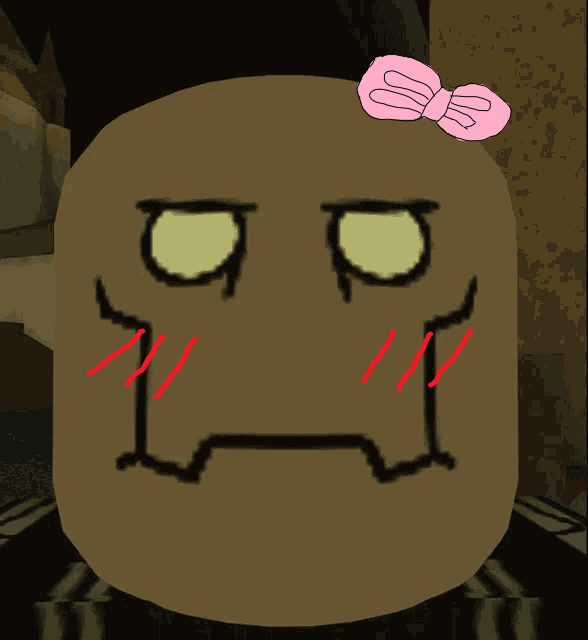

Doações
Por que precisamos de doações?
Estamos precisando de doações para realizar sorteios e eventos que movimentem nosso servidor. Você pode ajudar a nossa comunidade doando artefatos, silver ou nitro para aumentar o nível do servidor. Mas, caso você não tenha nenhuma dessas opções, ficaríamos muito felizes em ter você conosco no nosso servidor do Discord!
Como fazer doação?
Entre no nosso servidor do Discord, preencha todas as informações, crie um ticket no canal #tickets, selecione a opção de doação e aguarde a resposta de um atendente.
